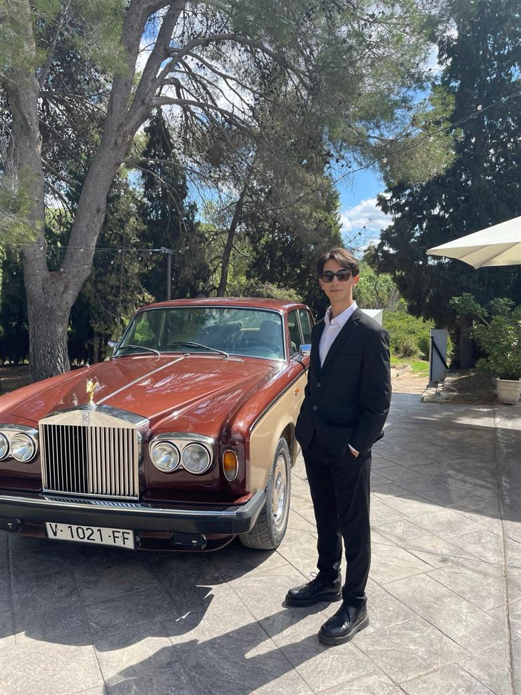

Legal translation
Court and administrative documents, translated with the precision legal texts demand. Trained at the Ciutat de la Justícia in Valencia.
Translator & Interpreter
Available immediately
Translator & Interpreter
Diego PabloRoselló Macías
Translation and interpreting between Spanish, Catalan, English and French, with hands-on experience in legal translation.
Profile
I’m a Translation and Interpreting graduate from Universitat Jaume I in Castellón. I combine a fluent command of Spanish, English and French with a strong background in customer service and public-facing roles, so I can adapt to the needs of international clients. I’m organised, I do well in fast-paced environments and I enjoy working in a team. I’m available immediately and can work flexible hours.
Las palabras viajan; el sentido se queda.Services
Court and administrative documents, translated with the precision legal texts demand. Trained at the Ciutat de la Justícia in Valencia.
Websites, correspondence and everyday documents between Spanish, Catalan, English and French.
Liaison interpreting for meetings, appointments and visits, with a calm, people-first approach.
Private English classes tailored to each student, built on two years of teaching experience.
Languages
Proficiency · B2 certified by CLES
Advanced · B2 certified by the Institut Français
Estimated level
Beginner
Experience
2026
Ciutat de la Justícia · València
Internship as a legal translator at Valencia’s justice complex.
2024 – 2026
Freelance
One-to-one lessons adapted to each student’s level and goals.
Jun – Sep · 2025, 2026
Piscina Parc Vedat (FDM Torrent) · Torrent
Public safety and customer care at a busy municipal pool.
Education
2022 – 2026
Universitat Jaume I (UJI) · Castelló
2020 – 2022
IES Salvador Gadea · Aldaia (València)
2016 – 2020
IES Faustí Barberá · Alaquàs (València)
Certificate
School of Lifesaving and Aquatic Rescue (ESSA)
Skills & availability

Contact
Write to me in Spanish, Catalan, English or French.